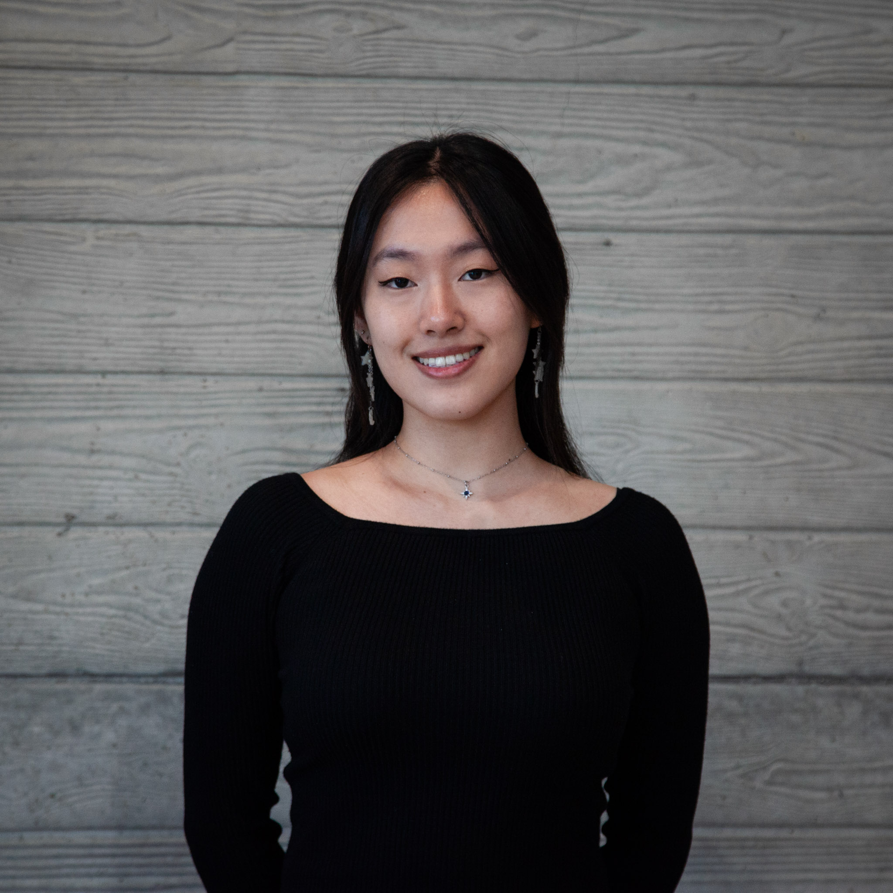

About Me
Hi! My name is Erin and I'm a mechanical engineer with an interest in product design, prototyping, fabrication, and creative technology. I enjoy projects that combine technical problem solving with thoughtful, user-centered design.
My work varies from mechanical engineering, CAD, fabrication, interactive experiences, and digital media. I'm especially interested in designing products and experiences that are functional, intuitive, and meaningful to the people who use them.
Senior Capstone


The GymPal, the final result of my senior capstone, is a gym accessory made to help people with cerebral palsy have a more independent experience in the gym. Specifically to make it easier for them to remove the pin out of a weight stack and adjust the weight used during an exercise.
The Wishkeeper

The Wishkeeper is an interactive choose your own path type game made for the Web Narratives class of the MAD minor. It was made to encourage players to think carefully about the decisions they make and the impact those decisions can have on others.
Combination Safe Box
This project was created for the physical computing class. The safe is intended to be a tool to reduce distractions, like locking up your phone, and introduces a frictional block to help with concentration.
Russian Nesting Hearts


The Russian Nesting Hearts was a project for the prototype and manufacturing class. The idea was rooted in the concept of russian nesting dolls, and each layer was made in the shape of a heart and with slightly different fabrication methods.
A Night in the Rain

A Night in the Rain was the final deliverable for the audio engineering and design class. It is a lofi style piece with rain as it's main idea. The tracks layer and build as the night goes on.